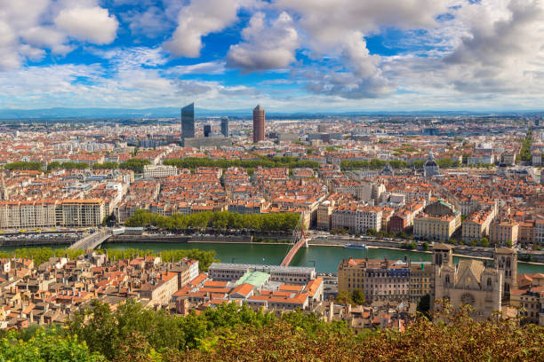
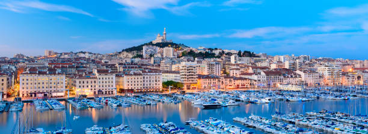
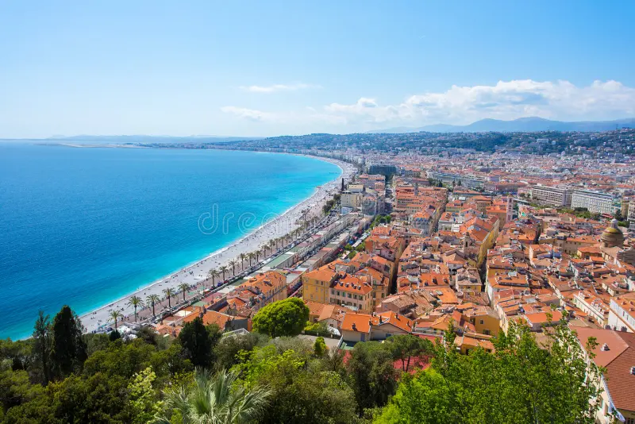
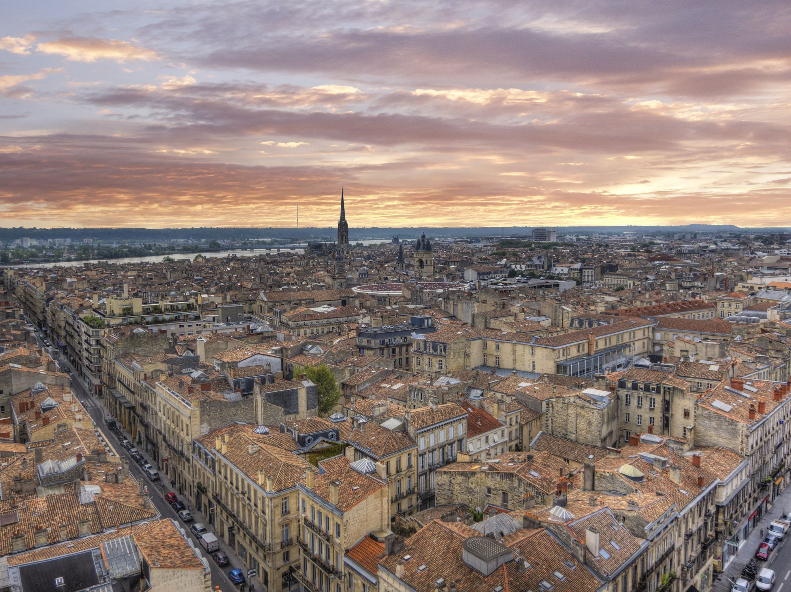
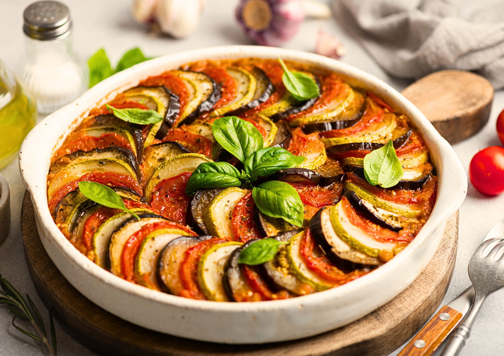
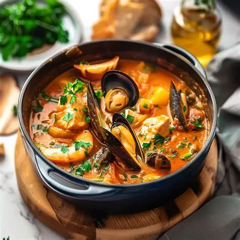
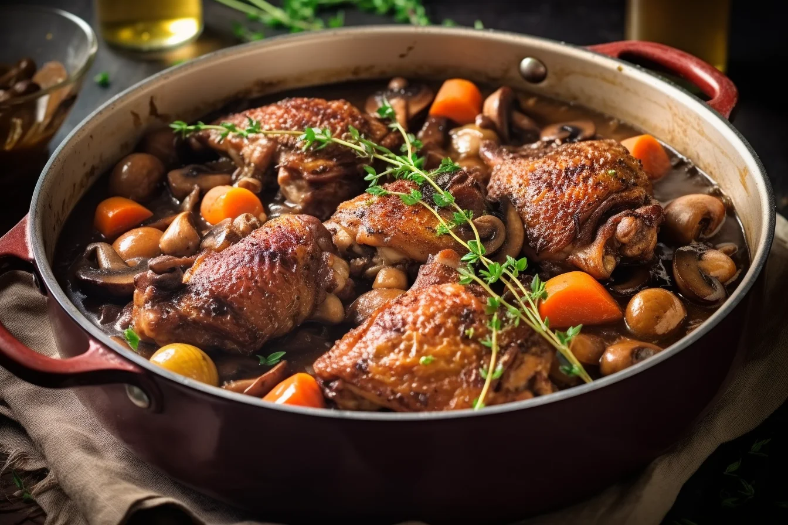
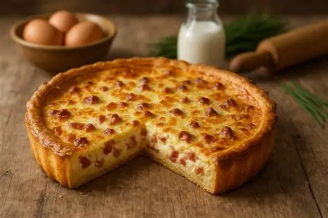
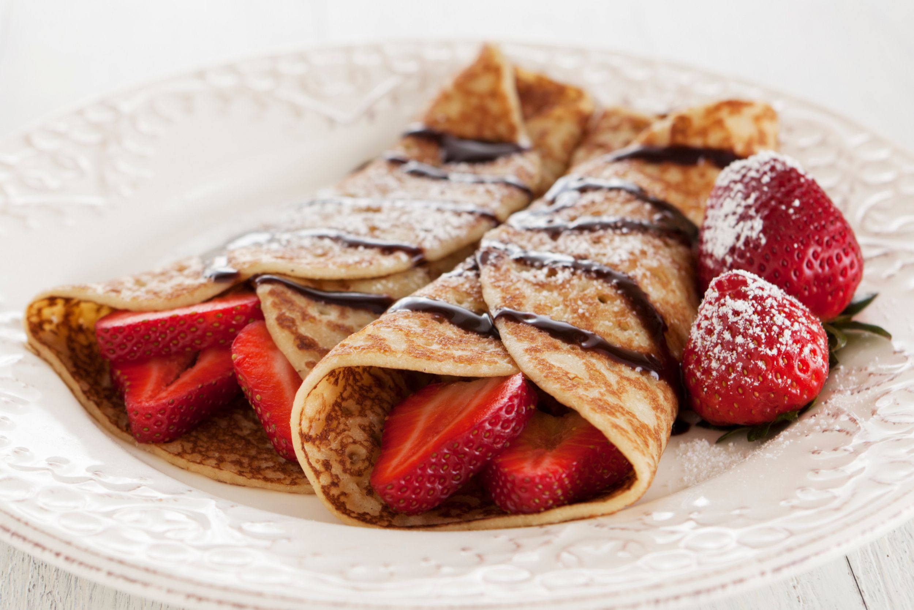
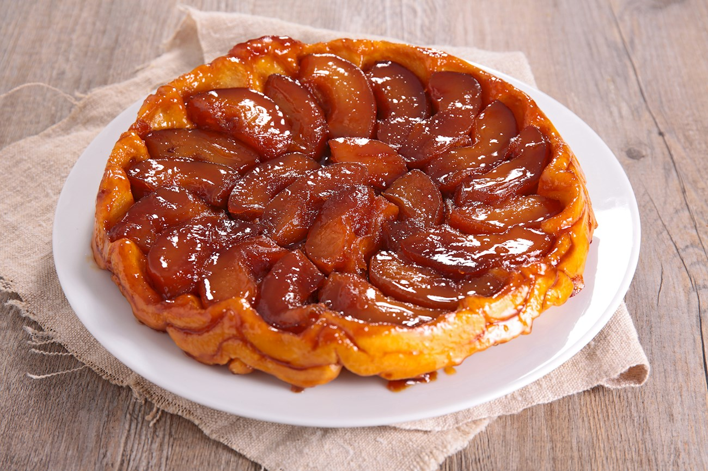

Inverno
- Dicembre
- Gennaio
- Febbraio






Stufato provenzale di verdure estive, tra cui melanzane, zucchine, peperoni e pomodori, aromatizzato con erbe.

Zuppa di pesce provenzale, tradizionalmente servita con crostini e salsa rouille.

Pollo brasato lentamente nel vino con funghi, cipolline ed erbe aromatiche.

Torta salata con base di pasta e ripieno di uova, panna e pancetta affumicata.

Sottili frittelle che possono essere dolci oppure salate, queste ultime spesso preparate con grano saraceno.

Torta rovesciata di mele caramellate cotte sotto uno strato di pasta.